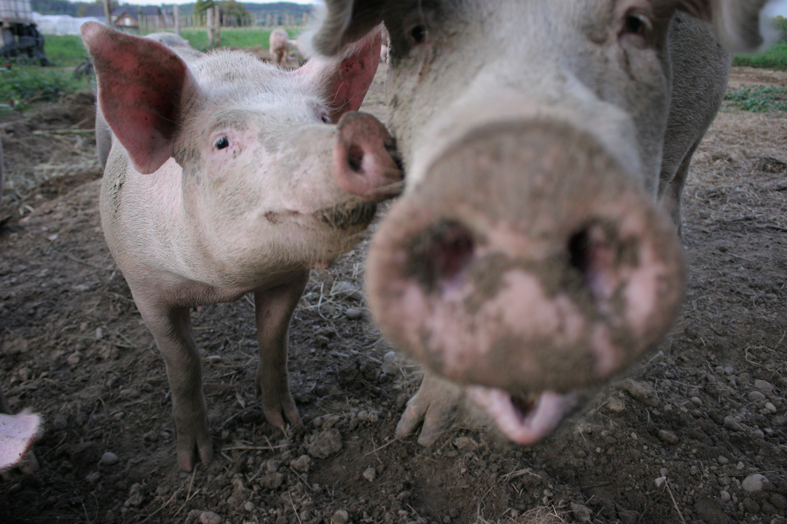

A Brief History
After graduating high school, life has been a bit of a journey - some of it done by bike. University seemed to be the next logical step, but after a few tries, I realized it wasn't for me. I took a job as receptionist, and while working with clients (& some nice colleagues) was fun for a while, I felt in need of a new challenge. The world of coding was very new to me, but it kept calling my name (through friends, movies that stuck with me, books I read), and finally I decided to just give it a go & not be intimidated by something I had no former experience in.
November 1st 1994
BORN
Leuven
2006
GRADUATED HIGH SCHOOL
Latin-Languages
2007
UNIVERSITY OF GHENT
Art History
ERASMUS HOGESCHOOL BRUSSEL
Journalism
FREE UNIVERSITY OF BRUSSELS
Political Sciences
2020
BECODE
-

Languages
Growing up in Leuven (Flanders), I got a pretty solid foundation in both English & French at school. My English developed through reading & listening to music, but I didn't really pick up French until I went to work in Brussels. Together with Dutch, I am now fluently trilingual.
-

Work experience
Throughout my life at university, I made some extra money by working odd little jobs. My first real work experience was as a receptionist for Vlaams Woningfonds at Brussels. Far from my dreamjob, I took it to pay the bills - but it turned out to be a really defining experience. Besides teaching me to speak French comme une vraie française, I was forced to learn how to keep calm in the most challenging situations, initiate & manage some administrative tasks and of course work with costumers.
-

Hobbies
Reading has always been a big passion of mine. As a child, you could always find me burried in a book. Although I've expanded my horizons a bit since then, this is still often the case with both fiction & non-fiction books. I've never really liked sports, but biking has become a recent favorite passtime, especially when combined with my newest hobby: photography!